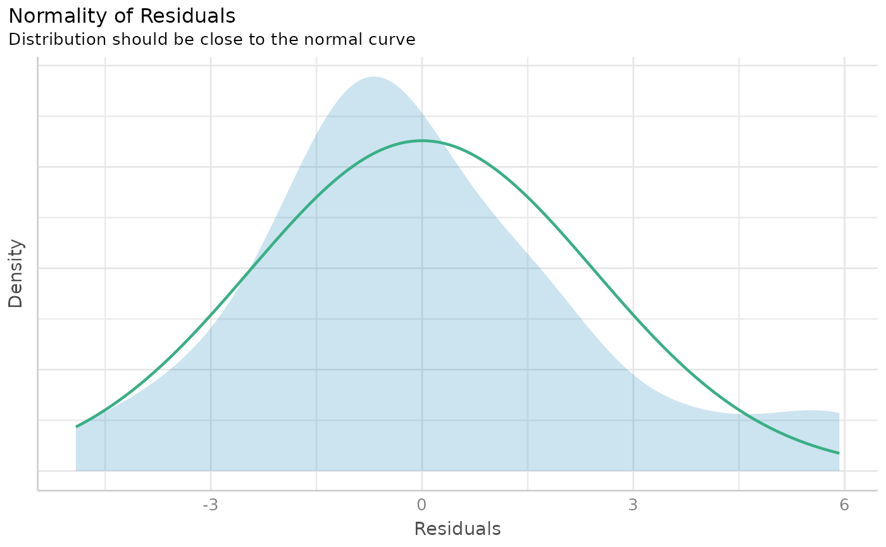

Check model for (non-)normality of residuals.
Usage
check_normality(x, ...)
# S3 method for merMod
check_normality(x, effects = c("fixed", "random"), ...)Value
The p-value of the test statistics. A p-value < 0.05 indicates a significant deviation from normal distribution.
Details
check_normality() calls stats::shapiro.test and checks the
standardized residuals (or Studentized residuals for mixed models) for
normal distribution. Note that this formal test almost always yields
significant results for the distribution of residuals and visual inspection
(e.g. Q-Q plots) are preferable.
Note
For mixed-effects models, studentized residuals, and not
standardized residuals, are used for the test. There is also a
plot()-method
implemented in the
see-package.
Examples
m <<- lm(mpg ~ wt + cyl + gear + disp, data = mtcars)
check_normality(m)
#> OK: residuals appear as normally distributed (p = 0.230).
#>
# plot results
if (require("see")) {
x <- check_normality(m)
plot(x)
}

if (FALSE) {
# QQ-plot
plot(check_normality(m), type = "qq")
# PP-plot
plot(check_normality(m), type = "pp")
}